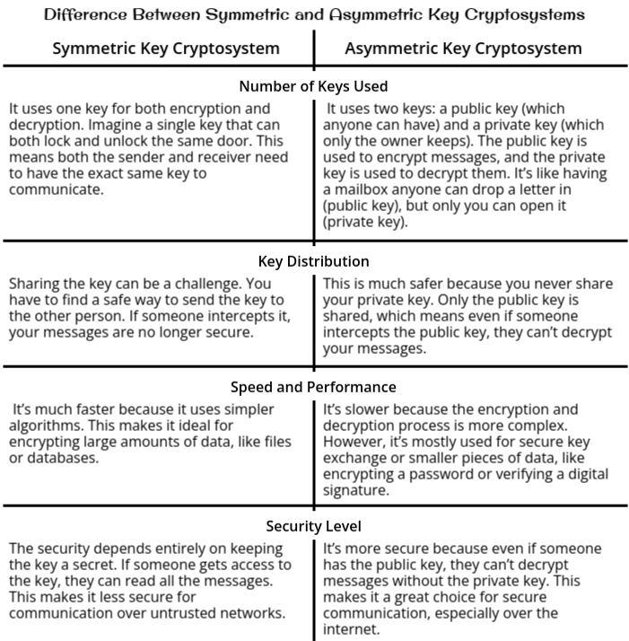
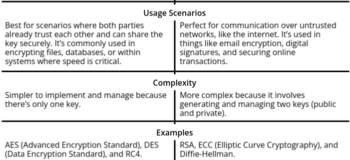

Public Key Encryption
Public Key Encryption, also known as Asymmetric Key Cryptography, is a foundational concept in modern
cryptography that enables secure communication over insecure channels. Unlike Symmetric Key Cryptography,
where the same key is used for both encryption and decryption, Public Key Encryption uses a pair of keys: a
public key (used for encryption) and a private key (used for decryption). This revolutionary concept has
made it possible for individuals and organizations to securely exchange sensitive information without the
need for a pre-shared secret key, making it an essential tool for secure online transactions, email
encryption, and digital signatures.
This topic is divided into several critical areas, each building upon the concept of public key
encryption and its various applications:
- Difference Between Symmetric and Asymmetric Key Cryptosystems: This section explores the fundamental
differences between symmetric (or secret-key) cryptosystems and asymmetric (or public-key)
cryptosystems. Symmetric systems use a single key for both encryption and decryption, which requires
secure key exchange mechanisms. In contrast, asymmetric systems solve this problem by using two keys: a
public key, which can be freely shared, and a private key, which remains confidential. Understanding
these differences is crucial for grasping the strengths and limitations of each approach in real-world
cryptographic applications.
- Public-Key Cryptography: The heart of the topic, public-key cryptography, encompasses the principles
that underpin asymmetric encryption systems. Public-key systems rely on the mathematical properties of
numbers and their operations to create secure systems. This section covers key cryptosystems used in
real-world applications:
- Principles of Public-Key Cryptosystems: These are the core concepts that explain how asymmetric
encryption works, including how public and private keys interact, and the role of mathematical
functions in providing security.
- RSA Algorithm: One of the most widely used public-key cryptosystems, RSA relies on the
difficulty of factoring large prime numbers. It is the basis for securing web traffic (e.g.,
SSL/TLS), digital signatures, and more.
- Rabin Cryptosystem: A less well-known but important cryptosystem, Rabin's method is based on the
difficulty of extracting square roots modulo large primes, and its security parallels RSA in
some ways.
- ElGamal Cryptosystem: Another key public-key cryptosystem, ElGamal is based on the
Diffie-Hellman key exchange and provides both encryption and digital signatures.
- Key Management: Key management refers to the processes and techniques involved in creating,
distributing, storing, and updating cryptographic keys in a secure manner. Proper key management is
crucial for maintaining the security of a cryptographic system, as the security of encrypted data is
only as strong as the protection of the keys used to encrypt it.
- Public Key Distribution: Public key distribution deals with the problem of securely sharing public keys
across an insecure network. Even though the public key is not secret, it must be delivered in such a way
that an attacker cannot substitute a fake key. Various methods, such as certificates issued by a trusted
Certificate Authority (CA), are used to ensure that the recipient is truly receiving the intended public
key.
- Mathematical Foundations: The security of public-key cryptosystems is deeply rooted in number theory,
particularly in the use of certain mathematical theorems that make encryption difficult to break:
- Fermat’s Theorem: Fermat's Little Theorem provides the basis for many public-key algorithms,
such as RSA, by asserting properties of numbers in modular arithmetic, particularly in prime
number fields.
- Euler’s Theorem: This theorem extends Fermat’s work and is used in algorithms like RSA for key
generation, ensuring that decryption works correctly by defining the relationship between the
totient of a number and modular exponentiation.
Difference Between Symmetric and Asymmetric Key Cryptosystems
-
Cryptography Samajhne ki Koshish Karein: Cryptography ka matlab hai aapke data ko
secure karna,
taaki sirf authorized log hi usse access kar sakein. Socho, aap apne dost ko ek secret message
bhejna chahte ho, aur
aap nahi chahte ki koi aur us message ko padhe. Yehi kaam cryptosystems karte hain.
-
Cryptosystem Kya Hota Hai?
- Ek cryptosystem ek framework hota hai jo kuch rules, tools, aur techniques ka istemal karta
hai data ko
secure karne ke liye.
- Yeh do important cheezein karta hai:
- Encryption: Readable data ko unreadable format me badalna.
- Decryption: Unreadable format ko wapas readable banane ka process.
- Cryptosystems ke core mein keys hoti hain jo ek "special code" ke tarah kaam karti hain, jo
information
ko lock aur unlock karti hain.
-
Cryptosystems ke Types: Cryptosystems ko unke key usage ke basis par do main types
me divide
kiya jata hai:
- Symmetric Key Cryptosystem:
- Yeh sabse simple aur fast type hai, jisme encryption aur decryption ke liye same key
ka use hota hai.
- Example: Socho aap aur aapke dost ke paas ek hi key hai jo box ko lock aur unlock
karti hai.
- Yeh method fast hoti hai aur zyada tar cases mein files ya databases ko encrypt
karne ke liye best hai.
- Advantages:
- Speed aur efficiency kaafi achhi hoti hai.
- Drawbacks:
- Aapko key ko secret rakhna padta hai. Agar kisi aur ke haath lag gayi, toh
woh sab kuch read kar sakta hai.
- Distant locations par key share karna mushkil ho sakta hai.
- Asymmetric Key Cryptosystem:
- Yeh thoda advanced hai, aur isme do keys ka use hota hai: ek public key aur ek
private key.
- Example: Socho ek mailbox hai jisme koi bhi apne letters dal sakta hai (public key
se encrypt kar ke),
par sirf aap apni private key se woh letters nikal kar padh sakte ho.
- Yeh internet par secure communication ke liye perfect hai, kyunki isme private key
ko share karne ki
zarurat nahi padti.
- Advantages:
- Secure hai, chahe insecure channels par bhi use kiya jaye.
- Drawbacks:
- Yeh symmetric systems ke comparison mein slow hoti hai.
-
Samajhne ki Baat:
- Symmetric Systems: Yeh fast aur efficient hoti hain, par ek key ko secret
rakhna zaruri hai.
- Asymmetric Systems: Yeh slower hoti hain, par zyada secure hoti hain,
especially jab
untrusted networks ke through data share karna ho.
- Dono ko mila kar ek strong aur secure communication system banaya ja sakta hai.


Understanding the RSA Algorithm
RSA algorithm cryptography ki duniya mein ek important aur widely-used algorithm hai, jo secure
communication ko ensure karta hai, khaas kar internet par. Yeh algorithm apne inventors ke naam par
rakha gaya hai: Ron Rivest, Adi Shamir, aur Leonard Adleman. RSA ek asymmetric encryption method hai, jo
symmetric systems se thoda alag hota hai. Symmetric systems mein sender aur receiver ke beech ek common
key hoti hai, lekin RSA mein do keys hoti hain: ek public key aur ek private key. Is keys ka separation
extra layer of security provide karta hai, aur isi wajah se RSA ek trusted aur secure encryption method
hai aaj ke time mein.
What is the RSA Algorithm?
- RSA ek cryptographic algorithm hai jo prime numbers ke mathematical properties ka use karke
information ko secure karta hai.
- Isme do keys hoti hain:
- Public Key: Yeh key message ko encrypt karne ke liye use hoti hai aur
sabhi ke saath openly share ki ja sakti hai.
- Private Key: Yeh key message ko decrypt karne ke liye use hoti hai, aur
yeh key sirf owner ke paas hoti hai, isliye yeh secret rakhni padti hai.
- RSA ka security ka core prime factorization ke difficulty par based hota hai, jiska matlab hai
ki original primes ko reverse-engineer karna itna mushkil hai ki unhe decode kar pana
practically impossible hai.
How Does RSA Work?
To understand RSA, let’s break it into three main stages: Key Generation,
Encryption, and Decryption. Each stage involves some fascinating
mathematical principles that make RSA both secure and effective.
1. Key Generation
- Step 1: Choose Two Large Prime Numbers
- Select two large prime numbers \( p \) and \( q \). These primes should be random,
unique, and very large (hundreds of digits long for modern security).
- Example: \( p = 61 \), \( q = 53 \).
- Step 2: Compute \( n \)
- Multiply \( p \) and \( q \) to get \( n \):
\[
n = p \times q
\]
- \( n \) is a part of both the public and private keys. It defines the range of possible
values for encryption and decryption.
- Example: \( n = 61 \times 53 = 3233 \).
- Step 3: Compute \( \phi(n) \)
- \( \phi(n) \), called Euler’s Totient Function, is calculated as:
\[
\phi(n) = (p - 1) \times (q - 1)
\]
- Example: \( \phi(3233) = (61 - 1) \times (53 - 1) = 3120 \).
- Step 4: Choose an Encryption Exponent (\( e \))
- Select a number \( e \) that is relatively prime to \( \phi(n) \), meaning they share no
common factors other than 1.
- Common choices for \( e \): 3, 17, or 65537.
- Example: Let \( e = 17 \).
- Step 5: Calculate the Decryption Exponent (\( d \))
- Find \( d \), the modular multiplicative inverse of \( e \) modulo \( \phi(n) \),
satisfying:
\[
(d \times e) \mod \phi(n) = 1
\]
- Example: \( d = 2753 \).
- Final Output:
- Public Key: \( (e, n) = (17, 3233) \).
- Private Key: \( (d, n) = (2753, 3233) \).
2. Encryption
- Represent the message \( M \) as a number smaller than \( n \). For example, \( A = 1, B = 2,
..., Z = 26 \).
- Encrypt \( M \) using the public key \( (e, n) \):
\[
C = M^e \mod n
\]
- Example: Let \( M = 65 \). Encrypt:
\[
C = 65^{17} \mod 3233 = 2790
\]
- The ciphertext \( C = 2790 \) is sent to the receiver.
3. Decryption
- Use the private key \( (d, n) \) to decrypt the ciphertext \( C \):
\[
M = C^d \mod n
\]
- Example: Decrypt \( C = 2790 \):
\[
M = 2790^{2753} \mod 3233 = 65
\]
- The receiver restores the original message \( M = 65 \).
Strengths and Weaknesses of RSA
- Strengths:
- Strong Security: RSA apne asymmetric key system ki wajah se kaafi
secure hai. Do alag-alag keys (public aur private) hone ki wajah se unauthorized access
ke chances bahut kam ho jaate hain.
- Wide Compatibility: RSA ka use kai systems aur use cases mein hota hai,
jaise secure communication aur digital signatures ke liye.
- No Prior Key Sharing Needed: Is algorithm mein pehle se key exchange
karne ki zarurat nahi hoti, jo insecure networks par ek big advantage hai.
- Weaknesses:
- Slower Performance: RSA symmetric algorithms (jaise AES) ke comparison
mein slower hota hai, jo real-time applications ke liye ek limitation ho sakta hai.
- Large Key Size Requirement: Adequate security ensure karne ke liye RSA
mein large key sizes chahiye hoti hain (2048 bits ya usse zyada), jo processing aur
storage par extra load daalti hain.
- Future Quantum Threat: Quantum computing ke advancements agar reality
ban gaye, toh RSA jaise algorithms vulnerable ho sakte hain, kyunki quantum computers
prime factorization ko bahut efficiently solve kar sakte hain.
Applications of RSA
- Secure Web Browsing: Jab aap kisi website ka HTTPS version use karte ho, tab
SSL/TLS protocols ka use hota hai, jisme RSA encryption ka ek major role hota hai.
- Email Encryption: Sensitive emails (jaise ki PGP - Pretty Good Privacy) ko
encrypt karne ke liye RSA use hota hai, taaki unhe unauthorized log na padh saken.
- Digital Signatures: Documents aur software ki authenticity verify karne ke liye
RSA-based digital signatures use kiye jaate hain.
- Key Exchange: Symmetric keys ko securely share karne ke liye RSA ek trusted
method hai, jo overall communication ko secure banata hai.
Understanding the Rabin Cryptosystem
Rabin Cryptosystem ek aur tarah ka asymmetric encryption hai, jo apne inventor Michael Rabin ke naam par
rakha gaya hai. Iska introduction 1979 mein hua tha. RSA ki tarah, Rabin Cryptosystem bhi public aur
private keys ka use karta hai secure communication ke liye, lekin iska mathematical foundation thoda
alag hai.
Rabin Cryptosystem quadratic residues aur large numbers ko factor karne ki difficulty par based hai.
Iska security model quadratic residuosity problem ke difficult hone par depend karta hai. Yeh problem
computationally hard maana jaata hai, bilkul waise hi jaise RSA ka security model large integers ko
factor karne ki difficulty par based hai.
Chaliye is concept ko step-by-step samajhte hain, taaki aapko achhe se clarity ho.
What is the Rabin Cryptosystem?
- Mathematical Foundation: Rabin Cryptosystem ek asymmetric encryption algorithm
hai jo quadratic residues ke concept par based hai. Simple bhaasha mein, quadratic residues woh
numbers hote hain jo kisi integer ko square karne ke baad modulo kisi number ke equal hote hain.
- Hard Problem: Rabin Cryptosystem is baat ka faayda uthata hai ki agar ek number
\(y\) diya ho, toh iska square root modulo ek large prime number \(p\) dhoondhna kaafi mushkil
hota hai. Yehi quadratic residuosity problem hai.
- Key Generation: Rabin Cryptosystem modular arithmetic aur prime numbers ka use
karta hai, aur key generation ka process RSA se similar hota hai. Lekin encryption aur
decryption ka method dono algorithms mein alag hota hai.
Why is the Rabin Cryptosystem Important?
- Secure Communication: Bilkul RSA ki tarah, Rabin Cryptosystem bhi untrusted
networks par secure communication ko enable karta hai. Yeh particularly useful hai jab message
interception ka risk ho.
- Efficient Encryption: Rabin Cryptosystem ka encryption process RSA ke
comparison mein zyada efficient hota hai, kyunki isme kam operations lagte hain. Yeh faster ho
sakta hai kuch specific cases mein.
- Simple Mathematical Operations: RSA ke complex operations ke mukable, Rabin
Cryptosystem ki mathematical operations relatively simple hote hain, jo isse samajhne aur
implement karne mein helpful banate hain.
- Limitations: Halaanki Rabin Cryptosystem theoretically kaafi strong hai, iska
ek limitation hai decryption ambiguity. Iska matlab hai ki ek encrypted message ko decrypt karne
par ek se zyada possible outputs aa sakte hain. Yeh limitation iska usage real-world
applications mein restrict karta hai, lekin yeh cryptography ke theoretical studies ke liye ek
important system hai.
How Does the Rabin Cryptosystem Work?
- Key Generation: The first step is generating the public and private keys. The
process goes like this:
- Step 1: Choose a large prime \( p \). Select a large prime number \( p
\). This number should be large enough (at least 512 bits) to ensure security. Example:
\( p = 3233 \).
- Step 2: Calculate the Public Key. The public key in Rabin’s system
consists of the prime number \( p \) that you’ve selected. The public key is simply \( p
\). Public Key: \( (p) \).
- Step 3: Compute the Private Key. The private key is computed by
selecting a number \( x \) that is the square root modulo \( p \). This \( x \) is kept
secret. To find \( x \), solve the equation \( x^2 \equiv m \pmod{p} \) for some message
\( m \), where \( m \) is a number between 0 and \( p-1 \). This step is mathematically
challenging, which is why this system works on the assumption that finding square roots
modulo a large prime is computationally difficult. Private Key: \( x \).
- Encryption: Encryption in the Rabin Cryptosystem is done using the public key.
Here’s how encryption works:
- Step 1: Represent the Message. The message to be encrypted, \( m \), is
represented as a number. This number should be less than \( p \). Example: Suppose we
want to encrypt \( m = 123 \).
- Step 2: Compute the Ciphertext. The ciphertext \( C \) is computed as
the square of the message \( m \) modulo \( p \):
\[
C = m^2 \mod p
\]
Example: Suppose \( p = 3233 \) and \( m = 123 \), then the ciphertext is:
\[
C = 123^2 \mod 3233 = 15129 \mod 3233 = 2130
\]
The ciphertext \( C = 2130 \) is then sent to the receiver.
- Decryption: Decryption is where things get interesting in the Rabin
Cryptosystem. Here’s the tricky part: while encryption is simple, decryption can result in
multiple possible messages because of the properties of squaring numbers.
- Step 1: Use the Private Key to Find the Square Root. The receiver,
using their private key, tries to compute the square roots of the ciphertext modulo \( p
\). Since squaring is a many-to-one function (i.e., multiple numbers can have the same
square modulo \( p \)), the decryption process might yield two possible values for the
original message. This ambiguity means there are two possible messages for each
ciphertext, which is a problem in certain situations.
Example: Suppose the ciphertext is \( C = 2130 \). The receiver calculates the square
roots of \( C \) modulo \( p \). This process may yield two values, say \( m_1 \) and \(
m_2 \), both of which could be potential original messages.
- Step 2: Handle the Ambiguity. In the Rabin Cryptosystem, decryption
typically results in two possible values for the original message. The receiver needs to
rely on other means (e.g., context, checksums, or error-correction codes) to figure out
which one is the correct message.
Why is the Rabin Cryptosystem Secure?
- The Rabin Cryptosystem’s security is based on the quadratic residuosity problem. Given a number
\( y \), it’s computationally hard to find an integer \( x \) such that:
\[
x^2 \equiv y \pmod{p}
\]
where \( p \) is a large prime number. This makes it extremely difficult for an attacker to
reverse the encryption without knowing the private key.
- The strength of the Rabin Cryptosystem comes from the fact that solving quadratic equations
modulo large primes is computationally infeasible, especially as the size of \( p \) increases.
Strengths of the Rabin Cryptosystem
- Efficiency: The encryption process is very fast because squaring a number
modulo a large prime is computationally efficient.
- Simplicity: The mathematical operations involved (square modulo a prime) are
relatively simple compared to more complex systems like RSA.
- Theoretical Significance: It provides an alternative to RSA based on a
different hard problem (quadratic residuosity).
Weaknesses of the Rabin Cryptosystem
- Decryption Ambiguity: The most significant issue is that decryption leads to
two possible plaintexts. This means that the system isn’t fully reliable for general encryption
unless additional measures are taken to handle this ambiguity.
- Limited Use: Due to the ambiguity in decryption, Rabin is less commonly used
than RSA. It’s mainly of interest in theoretical cryptography or in special cases where the
ambiguity can be managed.
- Key Size: Like RSA, Rabin requires large prime numbers for security, which
increases computational costs for key generation.
Applications of the Rabin Cryptosystem
- Research in Cryptography: Though not widely used in practice, it’s an important
theoretical cryptosystem in the study of number-theoretic problems and public-key cryptography.
- Hybrid Systems: Rabin could potentially be used in conjunction with other
cryptosystems for specialized tasks, where its decryption ambiguity can be mitigated.
ElGamal Cryptosystem
- The ElGamal Cryptosystem is an asymmetric encryption algorithm that was introduced by Taher ElGamal
in 1985. Like RSA and the Rabin Cryptosystem, ElGamal uses a pair of keys: a public key for
encryption and a private key for decryption. What sets ElGamal apart is its reliance on the
mathematical problem of discrete logarithms, which is a well-known mathematical problem believed to
be computationally hard.
- The ElGamal system is widely used in various cryptographic applications, especially in digital
signatures and public-key encryption. It is known for being probabilistic, which means it adds
randomness to the encryption process, making it more secure compared to deterministic systems like
RSA.
- At its core, the ElGamal Cryptosystem provides secure communication by using the principles of
public-key cryptography. It works by transforming a plaintext message into ciphertext in a way
that’s computationally difficult to reverse without knowing the private key.
Why is the ElGamal Cryptosystem Important?
- The ElGamal Cryptosystem is significant because it offers semantic security, which means that
even if an attacker intercepts the ciphertext, they cannot gain any meaningful information about
the original message without the private key.
- What makes ElGamal important?
- Security Foundation: The security of ElGamal is based on the discrete logarithm problem,
which is considered difficult to solve, making the system secure.
- Versatility: ElGamal is used not only for encryption but also for creating digital
signatures. This means it can be employed in a wide range of cryptographic applications.
- Foundation for Other Systems: ElGamal has laid the groundwork for other cryptographic
protocols like the Digital Signature Algorithm (DSA), and is used in hybrid systems
combining asymmetric and symmetric encryption techniques.
How Does the ElGamal Cryptosystem Work?
The ElGamal Cryptosystem consists of three main stages: Key Generation, Encryption, and Decryption.
Each of these stages uses modular arithmetic, and it relies on the difficulty of solving the
discrete logarithm problem. Let’s go through them in detail:
1. Key Generation
The first step in the ElGamal Cryptosystem is generating the public and private keys. Here’s how
the key generation process works:
- Step 1: Choose a Large Prime \( p \)
- Select a large prime number \( p \), which will serve as the modulus for the system.
The size of \( p \) determines the strength of the cryptosystem.
- Example: \( p = 353 \).
- Step 2: Choose a Primitive Root \( g \) Modulo \( p \)
- Select a number \( g \) (called a generator or primitive root) that is a generator
of the multiplicative group of integers modulo \( p \). This means that \( g \) has
the property that its powers generate all the integers from 1 to \( p-1 \) when
taken modulo \( p \).
- Example: If \( p = 353 \), then \( g = 3 \) might be a valid primitive root modulo
\( p \).
- Step 3: Choose a Secret Private Key \( x \)
- Select a private key \( x \), which is a secret random number. This key will be kept
private by the user.
- Example: \( x = 123 \).
- Step 4: Compute the Public Key
- Calculate the public key \( h \) using the formula:
\[
h = g^x \mod p
\]
- The public key consists of the triplet \( (p, g, h) \), where \( p \) is the prime
modulus, \( g \) is the primitive root, and \( h \) is the result of raising \( g \)
to the power of the private key \( x \).
- Example:
\[
h = 3^{123} \mod 353 = 179
\]
Public Key: \( (p, g, h) = (353, 3, 179) \).
Private Key: \( x = 123 \).
2. Encryption
Once the public key is available, encryption can be done by anyone who wants to send a message
securely. Here’s how encryption works:
- Step 1: Represent the Message
- Convert the message \( m \) into a number \( m \) such that \( m \) is smaller than
\( p \). This can be done by converting text to ASCII codes or using other encoding
schemes.
- Example: Let’s say the message \( m = 42 \).
- Step 2: Choose a Random Number \( y \)
- Select a random number \( y \) that is less than \( p-1 \). This random number adds
probabilistic encryption, meaning it will make each encryption of the same message
result in a different ciphertext.
- Example: \( y = 67 \).
- Step 3: Compute the Ciphertext
- The ciphertext consists of two components, \( C_1 \) and \( C_2 \), which are
computed as:
\[
C_1 = g^y \mod p
\]
\[
C_2 = m \cdot h^y \mod p
\]
- \( C_1 \) is the result of raising \( g \) to the power of the random number \( y \)
modulo \( p \), and \( C_2 \) is the product of the message \( m \) and \( h^y \mod
p \), where \( h \) is part of the public key.
- Example:
\[
C_1 = 3^{67} \mod 353 = 268
\]
\[
C_2 = 42 \cdot 179^{67} \mod 353 = 144
\]
The ciphertext is then \( (C_1, C_2) = (268, 144) \), which is sent to the
recipient.
3. Decryption
Decryption in the ElGamal Cryptosystem is done by the receiver using their private key. Here’s
how the decryption process works:
- Step 1: Compute the Shared Secret
- The receiver uses their private key \( x \) and the received \( C_1 \) to compute a
shared secret \( s \) as:
\[
s = C_1^x \mod p
\]
- Example:
\[
s = 268^{123} \mod 353 = 179
\]
Notice that \( s \) is the same as \( h^y \mod p \) from the encryption step.
- Step 2: Compute the Inverse of \( s \)
- The receiver computes the modular inverse of \( s \) modulo \( p \), denoted \(
s^{-1} \), which is used to recover the original message.
- Example:
\[
s^{-1} = 179^{-1} \mod 353 = 319
\]
- Step 3: Recover the Original Message
- The original message \( m \) is recovered by multiplying \( C_2 \) with the inverse
of \( s \):
\[
m = C_2 \cdot s^{-1} \mod p
\]
- Example:
\[
m = 144 \cdot 319 \mod 353 = 42
\]
The original message \( m = 42 \) is successfully recovered.
Why is the ElGamal Cryptosystem Secure?
- The security of ElGamal is based on the discrete logarithm problem. Given a large prime \( p \),
a generator \( g \), and a number \( h = g^x \mod p \), it is computationally difficult to find
the exponent \( x \) that satisfies this equation. This difficulty makes ElGamal resistant to
attacks.
- The probabilistic nature of ElGamal encryption means that even if an attacker intercepts
multiple ciphertexts, they cannot easily deduce any information about the messages.
Key Management
In the world of cryptography, key management is one of the most crucial aspects of securing information.
It refers to the set of processes and technologies used to generate, distribute, store, use, rotate,
and eventually dispose of cryptographic keys. Without effective key management, even the most advanced
encryption algorithms can be rendered useless.
Think of cryptographic keys as the "passwords" that unlock encrypted data. The management of these keys
is as important as the strength of the encryption itself. A weak, lost, or compromised key can
jeopardize
the security of an entire system. Therefore, key management ensures that keys remain safe, accessible
only
to authorized users, and used correctly within cryptographic protocols.
Why is Key Management Important?
- Confidentiality is maintained: No unauthorized person should access the keys.
- Integrity is preserved: Keys must not be altered or corrupted.
- Availability is ensured: Authorized users must have access to the keys when needed.
Inadequate key management can lead to:
- Data breaches if keys are stolen.
- Loss of data if keys are lost or corrupted.
- Non-compliance with industry regulations and standards like GDPR, PCI-DSS, or FIPS.
The Key Lifecycle
-
Key Generation:
- Keys are generated using secure algorithms (e.g., RSA, AES, ECC) to ensure they are
random and unique.
- This process should occur in a trusted and controlled environment, often using
specialized hardware like HSMs (Hardware Security Modules).
-
Key Distribution:
- Once a key is created, it needs to be securely distributed to the intended users or
systems.
- For symmetric keys (e.g., AES), secure channels like Diffie-Hellman key exchange or
physical transfer may be used.
- For asymmetric keys (e.g., RSA), the public key can be shared openly, but the private
key must be kept secure.
-
Key Storage:
- Keys are stored in secure locations to prevent unauthorized access. This might include:
- Encrypted databases.
- Hardware Security Modules (HSMs): Devices specifically designed to generate, store,
and manage cryptographic keys securely.
- Secure Enclaves or Trusted Execution Environments (TEEs) in modern processors.
-
Key Usage:
- Keys are used for encryption, decryption, signing, and verifying.
- They must be protected during use to prevent exposure in memory or to malicious
programs.
-
Key Rotation:
- Regularly replacing old keys with new ones is essential for minimizing the impact of a
key being compromised.
- Rotation ensures that the same key is not used indefinitely, reducing the risk of
attacks like key exhaustion.
-
Key Revocation and Expiry:
- Keys should have a predefined lifespan. When a key is no longer needed or is
compromised, it must be revoked.
- Revocation ensures that the key cannot be used for encryption or decryption anymore.
-
Key Destruction:
- When a key has reached the end of its lifecycle, it must be securely destroyed to
prevent any chance of recovery.
- Secure methods like zeroization (overwriting memory) or physical destruction are often
employed.
Key Management in Symmetric and Asymmetric Systems
-
Symmetric Key Management:
- In symmetric encryption (e.g., AES), the same key is used for encryption and decryption.
- Key management challenges:
- Key Distribution: How to securely share the key between parties.
- Key Size: Larger keys provide more security but require more storage and
computational power.
-
Asymmetric Key Management:
- In asymmetric encryption (e.g., RSA, ECC), a public-private key pair is used.
- The public key is openly shared, while the private key must be kept secret.
- Key management challenges:
- Private Key Security: Protecting the private key from unauthorized access is
critical.
- Key Revocation: Revoking a compromised public key requires effective communication
to all users.
Key Management Techniques
- Manual Key Management:
- Suitable for small-scale applications or short-term keys.
- Keys are manually created, shared, and managed by individuals.
- Challenges: Prone to human error, scalability issues, and higher risk of key compromise.
- Automated Key Management:
- Uses software or hardware systems to manage keys throughout their lifecycle.
- Benefits:
- Reduces human error.
- Scales easily for large systems.
- Provides better logging and auditing for compliance.
- Centralized Key Management:
- All keys are managed from a single central location or system, such as a Key Management
System (KMS).
- Examples: AWS KMS, Azure Key Vault, Google Cloud KMS.
- Advantages:
- Simplifies administration.
- Ensures consistent policies across the organization.
- Decentralized Key Management:
- Keys are managed locally at individual endpoints.
- Suitable for systems with highly distributed architecture.
- Challenge: Ensuring consistent policies across all nodes.
Challenges in Key Management
- Key Theft: Attackers targeting keys stored on vulnerable systems.
- Key Distribution: Securely sharing symmetric keys across untrusted networks.
- Scalability: Managing keys in large-scale systems with thousands of users or devices.
- Compliance: Meeting industry standards for encryption and key management (e.g., FIPS, GDPR,
PCI-DSS).
- Backup and Recovery: Ensuring keys are backed up securely and can be recovered if lost or
corrupted.
Best Practices for Key Management
- Use Secure Key Storage: Always use hardware security modules (HSMs), encrypted databases, or
TEEs for storing keys.
- Enforce Strong Key Policies: Define policies for key length, rotation frequency, and expiry to
align with security standards.
- Implement Multi-Factor Authentication (MFA): Add additional layers of security for accessing
private keys.
- Audit Key Usage: Regularly monitor and log key usage to detect any unauthorized access or
anomalies.
- Encrypt Keys: Use one key to encrypt another (key wrapping) to add another layer of protection.
- Restrict Key Access: Ensure only authorized users or systems have access to keys. Use principles
like least privilege and role-based access control (RBAC).
- Plan for Key Compromise: Have a clear strategy for revoking and replacing keys in case of
compromise.
Applications of Key Management
- Cloud Security: Managing encryption keys for data stored in cloud services like AWS, Azure, and
Google Cloud.
- Enterprise Security: Protecting sensitive data, email communication, and network traffic in
businesses.
- IoT Security: Managing keys for millions of connected devices in IoT ecosystems.
- Digital Payments: Securing transaction data in payment systems like credit cards and e-wallets.
- Secure Messaging: Protecting messages in end-to-end encrypted apps like WhatsApp or Signal.
What is Public Key Distribution?
Public Key Distribution is a process used to securely share public keys between people or systems so they
can communicate securely. You might be wondering, "What’s a public key, and why do I need to distribute
it?" Let’s back up a bit to understand this better.
Remember from our earlier conversation about asymmetric cryptography? In that system, there are two keys:
a public key and a private key. The public key is used to encrypt messages, and the private key is used
to decrypt them. The trick with public key cryptography is that you can share your public key with
anyone, but you must keep your private key secret. This allows people to send you encrypted messages
without needing to worry about someone intercepting the key—because the private key is only with you.
But here's the catch: To encrypt a message to you, someone needs your public key. And this is where
public key distribution comes in. It’s all about making sure that the public key gets to the right
person, and it happens in a way that is secure and reliable. Without it, you could give your public key
to the wrong person (a hacker), and they could impersonate you or intercept your messages.
Why is Public Key Distribution Important?
When you want someone to send you a confidential message, you need them to have your public key so
they can encrypt their message for you. But you can't just post your public key on a billboard or
send it through a regular email—it needs to be authentic. If someone else gets a hold of your public
key and pretends to be you, they could trick others into sending sensitive information to them.
So, the main goal of public key distribution is to ensure that when people get your public key,
they’re sure it actually belongs to you and hasn’t been tampered with by a third party. It needs to
be trusted and verified.
How Does Public Key Distribution Work?
Now that we know why it’s important, let’s look at how public key distribution happens. There are a
few different methods to distribute public keys securely:
- Manual Distribution: The simplest way is for you to physically hand someone
your public key. For example, if you’re meeting someone in person, you could give them a USB
drive with your public key on it. This way, you control the transfer of the key, and you know
it’s safe. However, this method isn’t very practical for large-scale systems or for people who
are far away from each other. Plus, it doesn’t scale well.
- Public Key Infrastructure (PKI): PKI is a more sophisticated system for
distributing public keys. It involves Certificate Authorities (CAs), which are trusted
organizations that issue digital certificates. These certificates verify that a public key
belongs to a specific person or organization. When you want to send an encrypted message to
someone, you can trust the CA’s certificate to make sure the public key really belongs to the
person you’re trying to communicate with. Think of it like getting a government-issued ID card.
If you show your ID to someone, they know it’s authentic because the government verified it.
Similarly, a CA verifies the public key’s authenticity.
- Key Servers: Another way to distribute public keys is through key servers,
which are online directories where people can upload and download public keys. When you want to
find someone’s public key, you can search for it on the key server. The key servers make it easy
to distribute and manage public keys, but they rely on being trustworthy sources, just like the
CAs. One popular system that uses key servers is PGP (Pretty Good Privacy), which is used for
encrypting emails and files.
- Web of Trust: The Web of Trust is a more decentralized way of distributing
public keys. Instead of relying on a central authority like a CA, individuals personally verify
each other’s public keys. When you meet someone you trust, you can exchange and verify public
keys directly. This can create a network of trust between individuals, forming a "web." PGP also
uses this method, where users can sign each other's public keys to vouch for their authenticity.
How Do You Know a Public Key is Legitimate?
One of the challenges with public key distribution is verifying that the public key you receive is
authentic. If someone intercepts a public key during distribution, they could give you their own key
instead. This is where digital certificates and signature verification come into play.
- Digital Certificates: When you download a public key from a trusted source
(like a CA or key server), the key is often bundled with a digital certificate. This certificate
proves that the public key belongs to the person or organization that it claims to. The
certificate is signed by a trusted third party, ensuring its legitimacy.
- Digital Signatures: If you’ve received a public key from someone, they can also
sign the key with their private key. This helps you confirm that the key really belongs to them
and hasn’t been tampered with.
What Are the Risks of Public Key Distribution?
Even though public key distribution is a great way to enable secure communication, it’s not without
risks. Some potential risks include:
- Man-in-the-Middle Attacks: If an attacker intercepts your public key while it’s
being sent and replaces it with their own, they could decrypt the message before passing it on
to the real recipient. This is why it’s so important to use trusted methods like digital
certificates or key servers for distribution.
- Fake Certificates: If a CA is compromised or unreliable, they might issue fake
certificates that authenticate fraudulent public keys. This can be a big security issue, which
is why many systems constantly monitor and validate the reliability of CAs.
- Key Revocation: If your private key is ever compromised, it’s crucial to revoke
your public key. Public key distribution systems should have a way to revoke keys when necessary
to avoid further issues.
What Are Mathematical Foundations in Cryptography?
When we talk about the mathematical foundations of cryptography, we’re referring to the basic
mathematical principles and theorems that make modern cryptography work. Cryptography relies heavily on
math to create secure systems for encrypting and decrypting information. Among the many mathematical
tools used, number theory plays a big role because it helps us work with properties of numbers like
divisibility, remainders, and modular arithmetic.
Now, two key theorems—Fermat’s Little Theorem and Euler’s Theorem—are at the heart of these foundations.
They’re essential for understanding how many cryptographic algorithms, like RSA, work. So, let’s break
these down step by step.
Fermat’s Little Theorem
What Is It?
Fermat’s Little Theorem is a simple yet powerful rule in number theory. It deals with prime numbers
and modular arithmetic. The theorem states:
If p is a prime number and a is any integer such that a is not divisible
by p, then:
ap−1 ≡ 1 (mod p)
In simpler terms:
- Take any number a.
- Raise it to the power of p−1, where p is a prime number.
- When you divide the result by p, the remainder will always be 1.
Example:
Let’s take a = 2 and p = 7 (since 7 is a prime number).
27−1 = 26 = 64
Now divide 64 by 7. The remainder is 1, so:
26 ≡ 1 (mod 7)
Why Is This Useful?
Fermat’s Little Theorem helps us work with very large numbers in cryptography. Instead of directly
calculating massive powers, we can simplify them using modular arithmetic. This makes encryption and
decryption processes much faster and more efficient.
Euler’s Theorem
What Is It?
Euler’s Theorem is a generalization of Fermat’s Little Theorem. It works not just for prime numbers
but for any integers that are coprime (two numbers are coprime if their greatest common divisor is
1). The theorem states:
If n is a positive integer and a is an integer such that gcd(a, n) = 1,
then:
aϕ(n) ≡ 1 (mod n)
Here, ϕ(n) is called Euler’s totient function, which counts the number of integers less than
n that are coprime with n.
Totient Function:
- For a prime number p, ϕ(p) = p−1 (because all numbers less than
p are coprime with p).
- For a composite number n = p1e1 ⋅
p2e2 ⋅ …,
ϕ(n) = n ⋅ (1−1/p1) ⋅ (1−1/p2) ⋅ ….
Example:
Let’s take n = 10 and a = 3.
- Calculate ϕ(10):
The prime factors of 10 are 2 and 5.
ϕ(10) = 10 ⋅ (1−1/2) ⋅ (1−1/5) = 10 ⋅ 1/2 ⋅ 4/5 = 4.
- Apply Euler’s Theorem:
3ϕ(10) = 34 = 81.
Divide 81 by 10: The remainder is 1, so:
34 ≡ 1 (mod 10).
Why Is This Useful?
Euler’s Theorem is a cornerstone of RSA encryption, where it ensures that encryption and decryption
operations work correctly. The totient function ϕ(n) plays a key role in generating secure
keys.
Key Differences Between Fermat’s and Euler’s Theorems
- Scope:
Fermat’s Little Theorem applies only to prime numbers.
Euler’s Theorem applies to any positive integer n, as long as a is coprime
with n.
- Basis:
Fermat’s Little Theorem is a special case of Euler’s Theorem where n is a prime number.
In that case, ϕ(n) = n−1.
How Are These Theorems Used in Cryptography?
- RSA Algorithm:
Both theorems help us understand how modular exponentiation works, which is the backbone of RSA.
In RSA, ϕ(n) is used to generate the private and public keys securely.
- Efficient Computation:
They allow us to simplify calculations involving very large numbers, which are common in
cryptography.
- Security:
The difficulty of reversing these calculations without the private key is what makes encryption
secure.